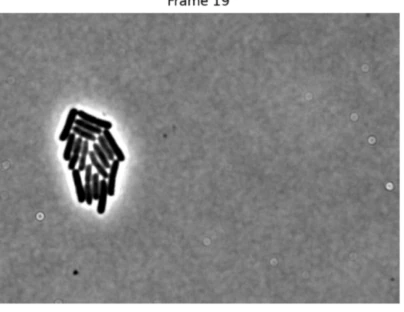
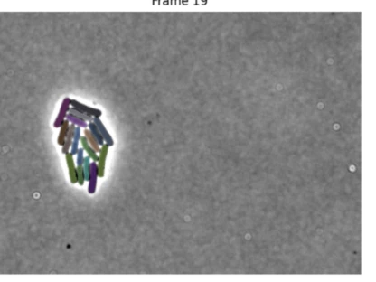
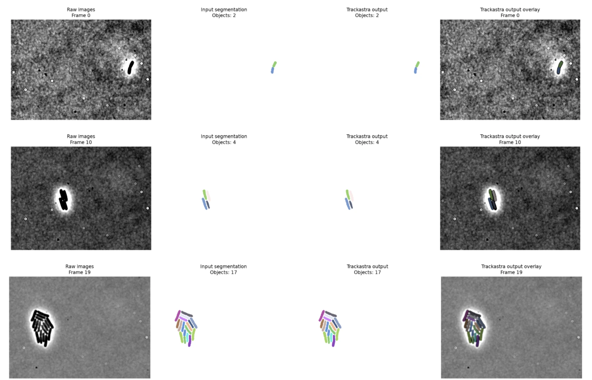

01
Microscopy
Read time-lapse phase-contrast images of individual bacterial cells and colonies.
Deep Learning for Single-Cell Analysis in Microfluidic Systems
Exploring how deep learning can segment, identify, and follow individual bacterial cells through time-lapse microscopy — and what happens when an imperfect segmentation changes the story.


Trackastra + ILP
with ground-truth masks
Mean matched overlap
Omnipose reproduction
Temporal-link agreement
between Bactrack runs
Phase-contrast images
processed in reproduction
An individual bacterium can grow, divide, change shape, and become difficult to distinguish from its neighbors. Tracking that behavior automatically is a deceptively hard problem.
Time-lapse microscopy produces hundreds of images containing small, similar-looking cells. Dense colonies, touching boundaries, and antibiotic-induced elongation can challenge even strong computer-vision models.
Our central question was: How do existing segmentation and tracking methods perform, and how does the quality of a cell mask affect the accuracy of its reconstructed trajectory and lineage?
This research used a modular view of the single-cell analysis workflow. The methods below were studied and evaluated across two separate experimental setups.
Read time-lapse phase-contrast images of individual bacterial cells and colonies.
Convert each frame into instance masks that isolate individual bacterial objects.
Link cells across frames while accounting for growth and mother–daughter division events.
Compare masks and links using IoU, TRA, HOTA, precision, recall, and F1.
Segmentation errors propagate downstream: a missing or merged cell can break an otherwise correct lineage.
Each experiment isolates a different part of the segmentation–tracking problem so that the findings remain interpretable.
Ran transformer-based tracking on a 29-frame bacterial time-lapse sequence, first with ground-truth masks and then with Omnipose predictions.
Reproduced published segmentation results with a pretrained Omnipose model and evaluated a MATLAB-free Bactrack alternative.
Strong tracking algorithms still rely on accurate detections. A small change in the input masks can materially change downstream lineage performance.
With ground-truth masks, ILP linking achieved a TRA score of 0.9984. Replacing those masks with Omnipose predictions reduced TRA to 0.9668 in the same 29-frame evaluation, even though the tracking model was unchanged.
Measured on a single bacterial time-lapse sequence; the difference should not be generalized without additional datasets.
| Segmentation input | Linking | DET ↑ | TRA ↑ | HOTA ↑ | IDF1 ↑ | AOGM ↓ |
|---|---|---|---|---|---|---|
| Ground truth | Greedy | 0.9945 | 0.9930 | 0.9898 | 0.9863 | 44.5 |
| Ground truth BEST TRA | ILP | 1.0000 | 0.9984 | 0.9975 | 0.9964 | 10.0 |
| Omnipose | Greedy | 0.9804 | 0.9671 | 0.9048 | 0.9047 | 208.0 |
| Omnipose | ILP | 0.9800 | 0.9668 | 0.9035 | 0.9049 | 210.0 |
Results from the project’s independent trpL/150310-11 experiment. These are not results from the separate custom 50-frame comparison in the broader project.

On the 141-frame xy5 sequence, the local Omnipose run closely reproduced the published segmentation outputs. Bactrack then produced highly consistent temporal links across both mask sets.
Tracking and division F1 values here measure agreement between two Bactrack runs, not accuracy against independently annotated tracking ground truth.
Mean matched IoU
F1 score
Temporal-link F1
Division-event F1
Across both experiments, the same conclusion emerged: segmentation is not just a preprocessing step. It is a determining factor in the reliability of single-cell tracking.
The project report documents the literature survey, datasets, experimental design, results, limitations, and references. The collaborative poster provides the wider project context.